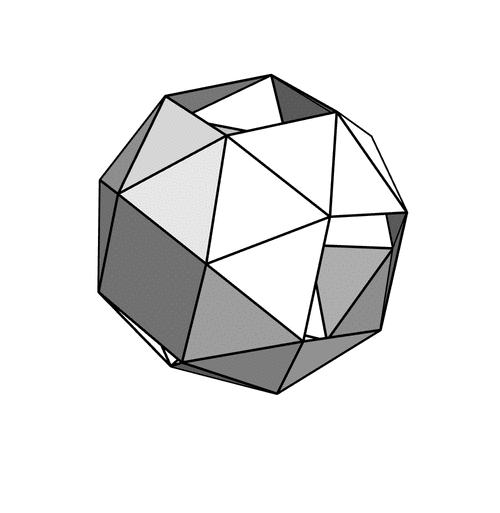
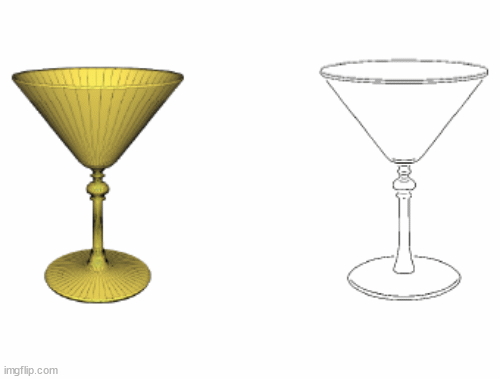

|

tom.marty@mila.quebec
Tom
Marty
I’m a Ph.D. student in Deep Learning at Mila under
the supervision of Dhanya Sridhar.
I'm originally from Réunion
Island  . I own an
engineering
degree from École
Polytechnique (X2018) in Paris, and a Master's degree in
Operational Research from Polytechnique Montréal. . I own an
engineering
degree from École
Polytechnique (X2018) in Paris, and a Master's degree in
Operational Research from Polytechnique Montréal.
I'm grateful to be supported by a FRQNT doctoral scholarship for four years.
My current research interest falls at the crossroad of probabilistic modelling, and learning theory. I'm interested in the role of simplicity and compression in the design of robust learning algorithms.
- In-distribution and Out-Of-Distribution generalization
- Amortized learning and Meta-learning
I'm also interested in generative modelling and flow-matching, especially for applications in computational biology.
I am currently seeking a research internship for 2026 — please contact me if you have opportunities.
In a previous researcher life, I specialized in Reinforcement Learning
and Combinatorial Optimization. I developed SeaPearl, a fully
functional Open-Source Constraint Programming solver.
Feel free to reach out to me via email if you have any
questions or for
potential collaborations.
Scholar
/
CV
/
GitHub
/
Twitter
/
LinkedIn
|
|
Research Experience
 |
Visiting ResearcherMarch. 2023 - October 2023
Service Now Research, Montréal, Canada
Supervisor: Alexandre Piche, Maxime Gasse, Quentin Cappart
Research Area: LLM, Task solving, Webpage processing
|
|
Research CoordinatorFebruary. 2022 - July 2022
Research InternFebruary. 2021 - July 2021
Corail
Research Group, Montréal, Canada
Supervisor: Quentin Cappart, Louis-Martin Rousseau
Research Area: Constraint Programming, Reinforcement Learning, GNN
|
 |
Software Development InternJun. 2020 - Sept. 2020
Dronisos,
Bordeaux, France
Developed Harmony, a particle based meta-heuristic that secures massive
drone swarms (+500 agents)
Research Area: Meta-heuristics, Force fields.
|
Accepted papers
You can also find the most up-to-date publications on my Google Scholar
page.
|
|
|
|
|
|
|
|
|
Other projects -Open Source Frameworks
|
| 
|
In-Context Learning as causal structure learners
Dec' 24 - Present
Work in progress...
Keywords : Causal Structure Learning, Minimum description length,
Meta-learning
|
|
|
A simple research Project Code Template
Jan' 25
I made a code template to quick-start your research project with a fully functional environment and backbones
for your codebase. S/o to my amazing collaborators Eric Elmoznino and Tejas
Kasetty.
The template includes a lot of nice features such as:
Pytorch Lightning ⚡, pre-commit ✅, Hydra üîß, Weights & Biases integration
üìä, Github
Actions CI ü§ñ...
Code

|
 |
Adversarial Attacks on Sentiment Analysis models
Mar' 22 - May' 22
This project was carried out in the framework of the IFT6167 seminar led by
Prof. Irina
Rish (Mila, Québec).
In this work, we aim to show, regarding Natural
Language
Sentiment Analysis, that there exists a relationship between model
size and
robustness to adversarial attacks. Ultimately, uncovering the emergence of
power laws
and
testing the robustness of language model with scale. We evaluate the
performance of
various
Eleuther AI GPT
models such as GPT-Neo 125M, GPT-Neo 1.3B, GPT-Neo 2.7B, GPT-J 6B against
adversarial
attacks. We fined-tuned (trained on adversarial example) our different GPT
models on
common
datasets (Rotten Tomatoes, IMDB...) and evaluated them separately to
quantify the
effects of
scale on adversarial training.
Report /
Slides
|
 |
Diffusion Geodesic : a new Metric for non-linear
Dimensionality
Reduction
Sep' 21 - Jan' 22
In collaboration with Ph.D. candidate Guillaume
Huguet
(Mila,
Québec), we present our method for non-linear dimensionality reduction
called Diffusion
Geodesic.
Dimensionality reduction techniques are often used to visualize the
underlying geometry
of a
high-dimensional dataset. These methods usually rely on specific similarity
measures. In
this
project,
we first approximate the geodesic distance using a diffusion process over
the underlying
manifold,
then
we use Multi-Dimentionnal Scaling combined with our
previously defined
pairwise
'distances' to embed our Manifold in a lower dimensional space. We compare
our model
with popular
algorithms such as PHATE, UMAP, and Isomap on toy datasets and RNA-seq
dataset.
Report /
Code
|
 |
Autonomous Drone Swarm Deployment
Dec' 20 – Mar' 21
In collaboration with Sariah Al Saati (ENS), Mehdi Benharrats (X-HEC), Swann
Chelly
(Sorbonne
University) and Pierre Tessier, this report proposes a method for the
coverage of a
rescue zone with
a
swarm of UAVs.
The method is based on Collaborative
Reinforcement Learning. It also presents a pipeline to locate
points of interest in 3D from a set of 2D images using Inverse Projection Transformation and 3D ray
clustering.
Report
|
 |
Realtime 3D Deep Motion Capture
Oct' 20 – Dec' 20
In collaboration with Pierre Tessier (MS, Columbia University), the
objective of our
project was to
implement a intelligent 2D to 3D Motion Capture mechanism that uses only the
video
stream of a
webcam as
input. We were able to animate relatively accurately this Mk-44 Iron Man 3D
model.
The project is based on the model DOPE presented in this paper
for the
automatic 3D rig
generation from video input coupled with a quaternion-based 3D rotation inference pipeline for
3D model
animation.
Report (french)
/
Video /
Code
/
Slides
|
|  |
Sketch-based Shape Retrieval
Sep' 20 – Dec' 20
In collaboration with Pierre Tessier (MS, Columbia University), the
objective of our
project is to
enable an efficient search in a 3D model bank models from simple hand
drawings. The
project is based
on
this paper SIGGRAPH2012.
The project lies on differents techniques such Suggestive Contouring (Canny
filter),
Gabor filtering
(gaussian convolution on Fourier Transformation of the input image) and
histogram
representation
using
Visual Vocabulary.
Looking back at this project, I saw that another
paper with much
more impressive results came out a few years later
using
Siamese convolutional Neural Networks for feature
extraction.
Report (french)
/
Code
/
Slides
|
 |
Procedural modeling of a 3D rendered scene
Mar' 20 – June' 20
In collaboration with Elsa Deville  (MS,
Imperial College),
the
objective of our project is to fully render a realistic 3D marine scene
using only
randomized procedural
modeling (OpenGL).
(MS,
Imperial College),
the
objective of our project is to fully render a realistic 3D marine scene
using only
randomized procedural
modeling (OpenGL).
The project implements different visual elements among them terrain
generation using Perlin Noise, a realistic simulation of a fish swarm
movement
based on this
paper and realistic-looking ocean waves. (Trochoidal
Waves :
exact
solution of the Euler equations for periodic surface gravity waves).
Report (french)
|
Education
 |
Ph.D. in Machine LearningJanuary
2024 - Present
Mila - Université de Montréal
Advisor: Dhanya
Sridhar
Montréal, Canada
|
 |
Master Thesis in Machine LearningSeptember
2021 - July 2023
Polytechnique
Montréal
Advisor: Quentin
Cappart, Louis-Martin Rousseau
Montréal, Canada
|
|
|
Bachelor of Science - Ingénieur Polytechnicien
X2018Jun. 2018 -
May. 2021
Ecole
Polytechnique
Major in Computer Science
Minor in Applied Mathematics
Ranked 3rd out of 3000+ candidates at the national entrance exam for
Ecole Polytechnique, the most
prestigious and selective engineering school in France.
Palaiseau, France
|
 |
CPGE : Higher School Preparatory
ClassesJun.
2016 - May. 2018
Lycée public Jean-Baptiste Say
Intensive multi-disciplinary program leading to competitive entrance
exams of french Grande Ecoles.
Paris XVI, France
|
|
Initiatives and Academic Services
|
|
Grants, Scholarships and Awards
|

|
FRQNT doctoral training scholarship for 4 years
Mar.
2025
|

|
Distinguished Paper Award at CP2023, Toronto Sep.
2023
|
|
|
Mitacs Accelerate scholarship of two units (30k$) Mar.
2023
|
|
|
Vallet Fondation scholarship for outstanding CPGE students 2018
|

|
French state scholarship for undergraduate studies2016
|
|
|


{kind=link}